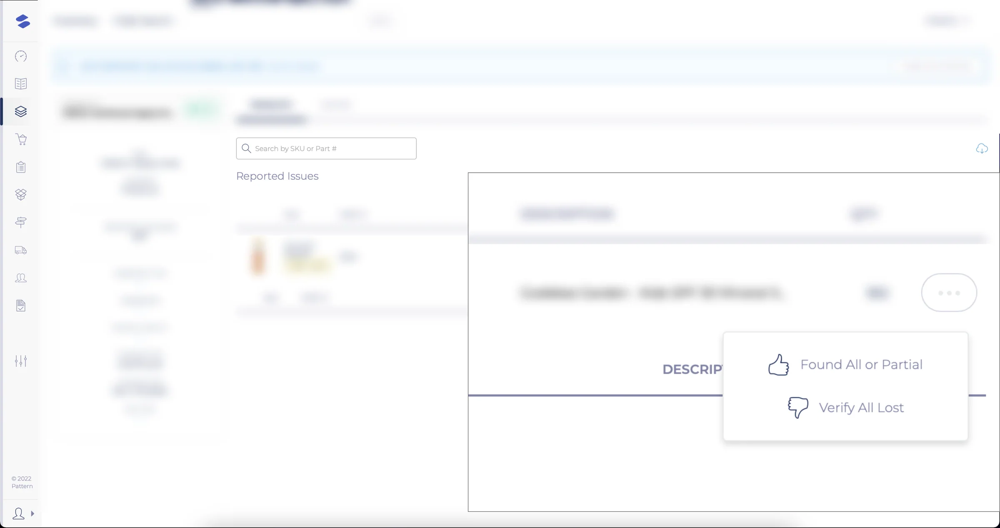
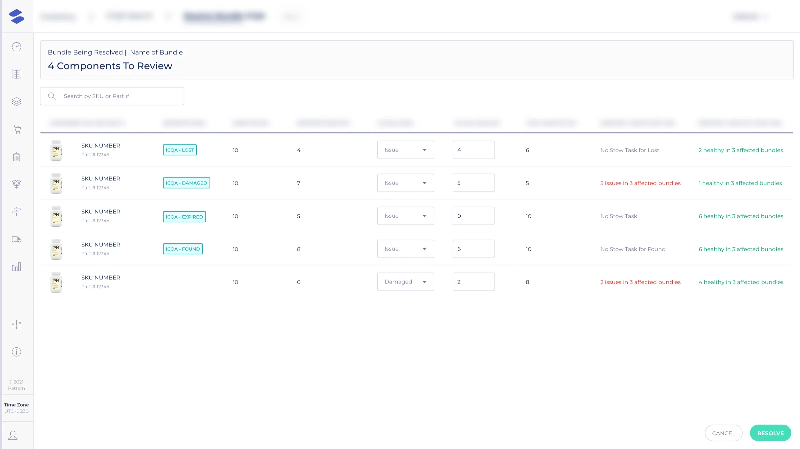
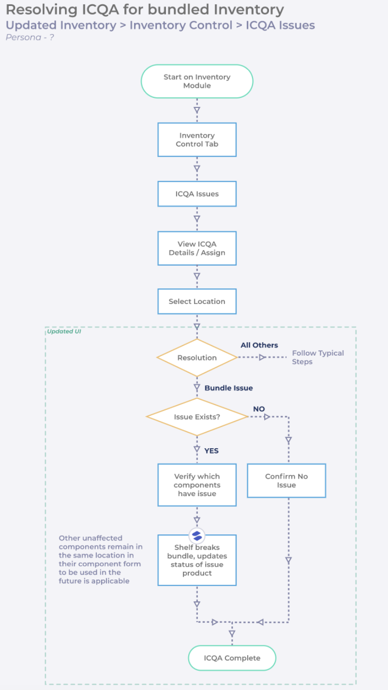
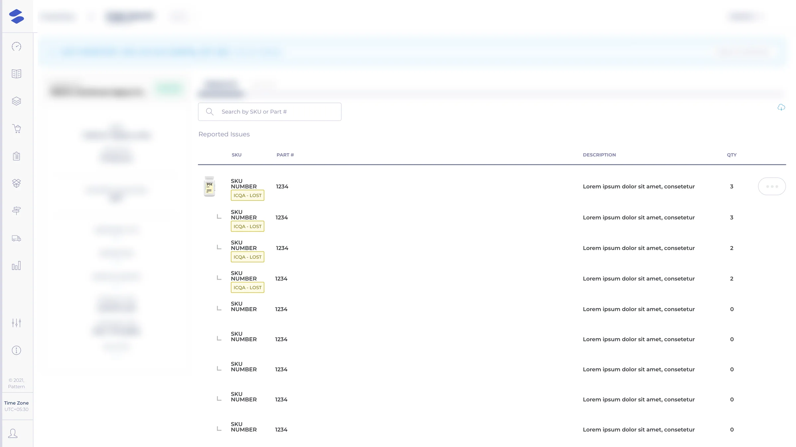
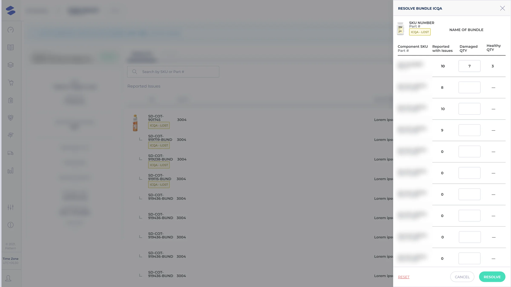
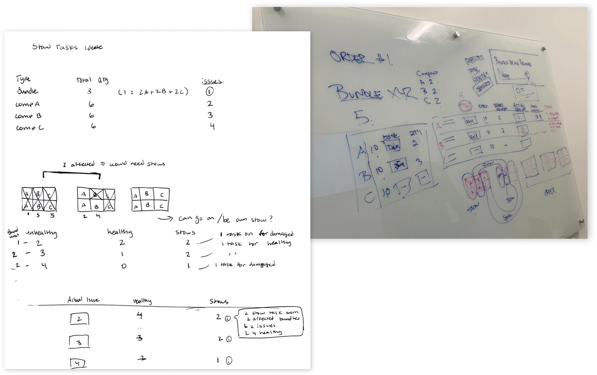
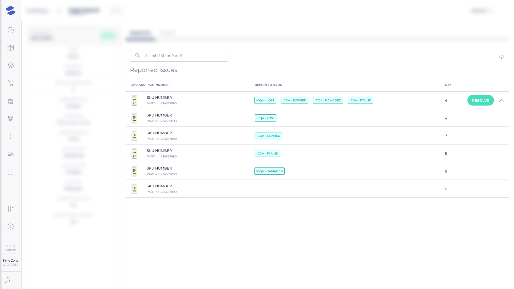
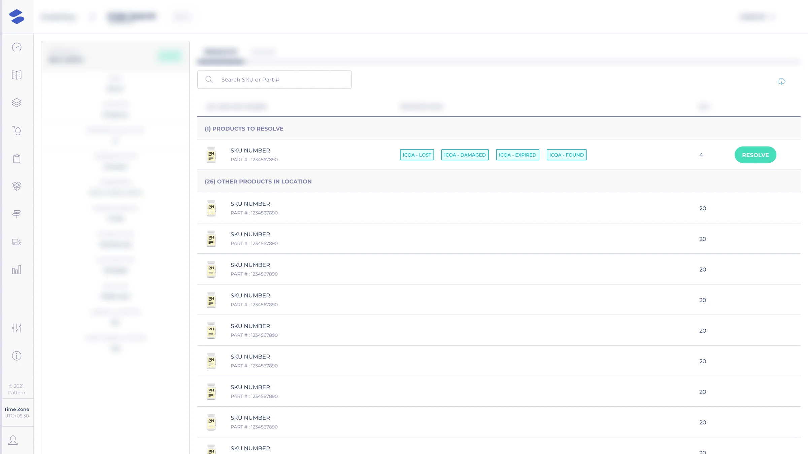
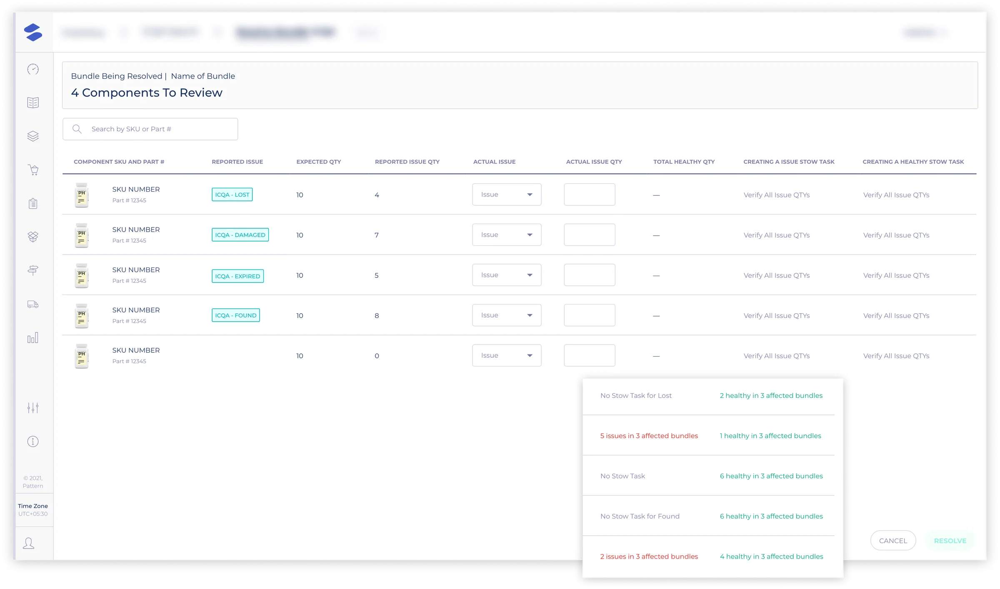

Streamlining the Bundling process to enhance visibility and reduce confusion.
Team
Edward Holmes, Lead User Experience Designer
Jared Croft, Product Manager Intern
Yolanda Jiang, UX Design Intern
Tools
Adobe XD
ClickUp
Google Suite
Timeline
Summer 2022 - 10 weeks
Overview
This summer, I worked with the UX, Product, and Engineering teams to design the flow of
resolving bundling issues on Pattern's internal software, Shelf - a AI-driven inventory management and logistics
solution for e-commerce, to decrease confusion of the bundling process.
What is a Bundle?
Package of multiple products (aka components) sold
together as a single unit
Requires the warehouse to physically combine 1 or
multiple SKUs/PNs (Stock-keeping unit/Part number)
The Problem
The current Bundling flow has no clear way of viewing and resolving ICQA (Inventory Control
and Quality Assurance) issues on the component level for bundles. This creates confusion in knowing what parts
of a bundle have an issue and what parts can be pulled to combine with other healthy bundles.

My goal was to create a workflow designed to review and resolve
issues reported for bundles.

01. Discovery & Research
I first spent about a week setting up calls with the rest of my team to better understand
the task at hand and to learn the platform Shelf as a whole. This helped me grasp the design requirements, user
needs, and how the design integrates with the platform.
User Story
“As a warehouse supervisor, I need to resolve ICQA's but it's
difficult to know what parts of the bundle have the
issue, and what
other parts of the bundle I need to pull. I wish Shelf would clearly tell me which parts have the issue and which
are
fine.

Solution Requirements
The ICQA resolution identifies the component with the issue. Shelf breaks the bundle into its
parts, updates the status of the problematic product, and generates a *stow task for the "good"
components. This allows healthy products to be moved and re-bundled for shipping.
*A stow task is
created when components of a bundle have an issue, causing the
issued and healthy products to be moved so that the healthy products can create bundles to be
shipped.
User Flow

02. First Iteration
In my first iteration, I focused on understanding the task and brainstorming ways to
design the ICQA resolution flow. One idea was a pop-out drawer to maintain consistency with Shelf. While this
addressed the main issue of identifying problematic components, design refinement meetings with the lead UX
designer revealed additional issues that needed resolution.

✅ Enhancing the Reported Issue page to display bundles at the component level
for better insight and resolution.
❌ No organized context for the bundle and its issues.
✅ Drawer showing components with reported quantities, inputs for actual issued
quantities, and remaining healthy quantities for added context.
❌ Lacks space for additional columns to provide more insight into each
component.

💥 03. Roadblock -
Understanding Stow Tasks💥
Another issue that was brought up from the solution
requirements was including stow tasks in my design. However, I first had to understand what stow tasks were
and how they worked - which led to multiple meetings with the lead designer to whiteboard examples and fully
understand how I could incorporate stow tasks into my design.
After resolving bundle issues, a stow task prompts users to move healthy and damaged
components to form new healthy bundles. My next goal was to display the number of stow tasks created
during this process.

*Snapshot of whiteboarding to
understand the math behind
stow task creation
04. Second Iteration
By understanding stow tasks, I was able to brainstorm and incorporate ideas to improve visibility and integrate feedback from previous designs into my second iteration.
✅ Dropdown on the first page shows associated bundle components and their
issues.
❌ This feature can be confusing and provide overwhelming information.

✅ A full-page issue resolution with essential columns, user input, and
hover-revealed healthy quantities and stow tasks.
❌ Simplify the stow task view by removing hover info icons
because only a maximum of 2 stow tasks are generated.
05. Final Design
After multiple design iterations, I was able to finalize and present a design solution that
was simple yet optimal with input from both the design team and users.

Reported Issues
Provides insight into bundles with issues and their specifics, while also displaying other
products in the same warehouse location for additional context.
Resolving Page
Multiple columns offer detailed information on reported issues for each component, enabling
users to verify and understand the stow tasks created based on issue types and quantities.

Business Impact
The Bundling design enhances issue visibility by detailing reported problems for
each bundle component. This reduces confusion in the bundling process, lowers warehouse labor costs,
ensures accurate customer orders, maintains good marketplace relationships, and facilitates warehouse
scaling.
Reflection
There was a learning curve with understanding the warehouse and how stow tasks are
formed on Shelf. While iterating my designs, I would often meet with the lead designer and product
manager to ask any questions and whiteboard the current process to make sure I could fully understand
the task at hand. My main learning through this project was to communicate effectively and not be afraid
to ask questions in order to ensure I could create the best design.